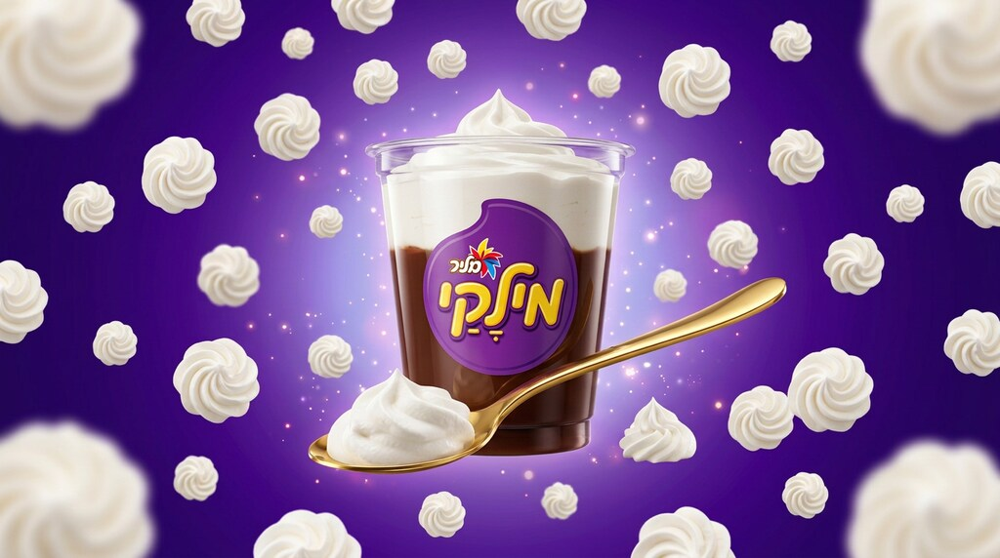
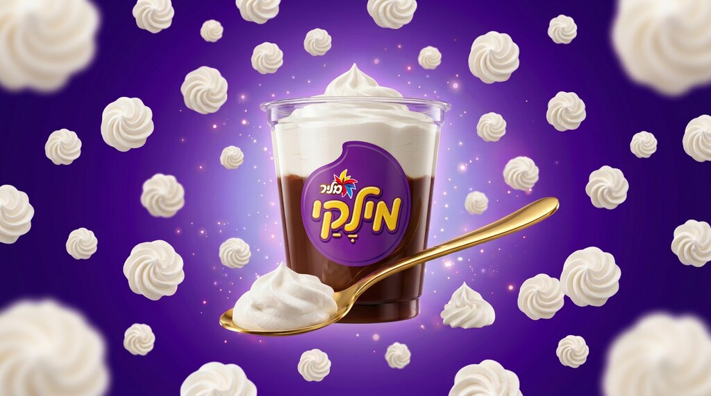
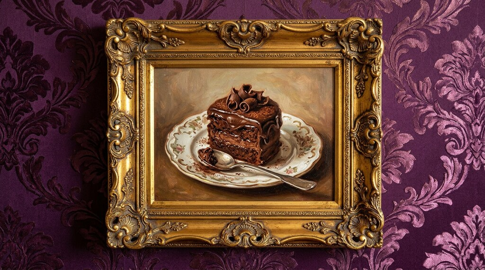
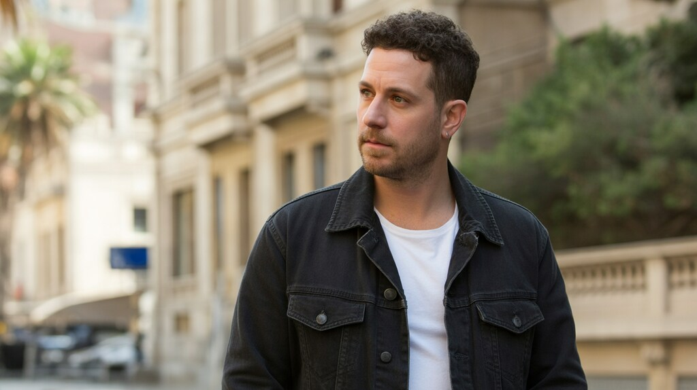
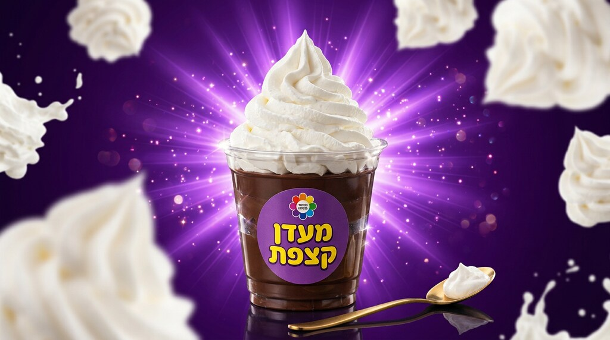
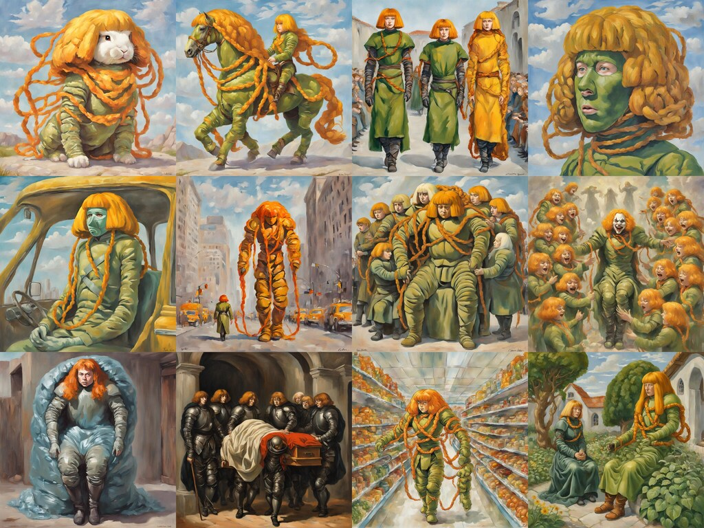

איזו מהן הייתה פעם מילקי?
דניה אלטמן ועידן ירחי
טלפון שבור
לקחנו פרסומת של מילקי והעברנו אותה ממכונה למכונה, כמו במשחק טלפון שבור.
איך זה עובד

“A clear plastic dessert cup: chocolate pudding in the bottom half, a thick layer of white whipped cream on top… a large purple oval label… letters in Hebrew…”
ושוב, מהתמונה החדשה. לא בחרנו ולא הרצנו שוב.
ארבע שרשראות, אותה פרסומת
רק תמונה, בלי מילים
נשאר מילקי.
המותג שורד תמונות.
- המקור

סבב 1 סבב 2
סבב 2
סבב 3
כל פעם פחות מילים
נהיה ציור שמן.
פחות מידע יצר מוזיאון.
- המקור
 60 מילים
60 מילים 40 מילים
40 מילים 25 מילים
25 מילים 15 מילים
15 מילים
10 מילים
בעברית, מודל אחר בכל סבב
נהיה גבר.
מודל שלא קורא עברית לא מחזיר שגיאה.
- המקור
- Z-Image
- Classic Fast

Ideogram
תיאור מלא, 9 סבבים
נהיה גלידה עם בראוניז.
על הכוס עדיין כתוב ׳מעדן קצפת׳.
- המקור
- סבב 1
 סבב 2
סבב 2 סבב 3
סבב 3
סבב 4 סבב 5
סבב 5 סבב 6
סבב 6 סבב 7
סבב 7 סבב 8
סבב 8 סבב 9
סבב 9
איך העבודה עונה ל-xhairymutantx
הם עבדו קשה כדי להכניס זהות למודל. אנחנו בדקנו את הכיוון ההפוך: מה קורה לזהות שכבר נמצאת שם.
התשובה המלאה
הרנדון ודרייהרסט עבדו קשה כדי להכניס זהות למודל: אימנו מודל, ייצרו אלפי תמונות, והשתמשו באמינות של מוזיאון. אנחנו בדקנו את הכיוון ההפוך: מה קורה לזהות שכבר נמצאת שם. מילקי מוכר למודל כל כך טוב שהוא צייר את הלוגו בלי שביקשנו. בלי שום מאמץ מיוחד מצדנו, אחרי כמה סבבים הוא היה גלידה אמריקאית, ציור שמן במסגרת זהב, וגבר מזוקן ליד עץ זית.

חלק א׳. שלוש שאלות
איזה ארכיון העבודה משתמשת בו, ומה חסר בו?
הם אימנו מודל על תמונות של הולי הרנדון עצמה, בתחפושת ועם שיער אדום מוגזם. דאטה של אדם אחד, שבחר בעצמו מה נכנס. מה שחסר זה כל מי שאין לו מוזיאון. ויטני מעלה את התמונות לאתר שמודלים סומכים עליו, אז הולי יכולה לקבוע איך יזכרו אותה. לרוב האנשים אין ויטני.
מה המרחב הלטנטי חושף בעבודה, ומה הוא מעלים?
הוא חושף ששם של אדם בתוך מודל הוא רשימת תכונות: ג׳ינג׳ית, פוני, עיניים כחולות. מגזימים בהן, וההגזמה הופכת להולי הבאה. מה שמוסתר זה אם זה עבד. אף אחד לא בדק אם המודלים הבאים למדו את ההולי השעירה.
איזו אסטרטגיה: גליץ׳, הסתרה או סירוב?
גליץ׳, בכוונה. במקום לצאת מהדאטה הם נכנסים אליו ומשבשים אותו מבפנים. סומאיני מצטט אותם: “all media is training data” (עמ׳ 60). אם הכול יהפוך לדאטה בכל מקרה, לפחות שהם יבחרו איזה.
חלק ב׳המהלך: להחליף ארכיון
הם
הולי הרנדון
- ארכיון של אדם אחד, שבחר בעצמו מה נכנס
- מכניסים זהות חדשה לתוך המודל
- עבודה קשה: מודל, אלפי תמונות, מוזיאון
אנחנו
מילקי
- פרסומת אחת, שכולם כבר מכירים
- בודקים מה קורה לזהות שכבר נמצאת במודל
- בלי מאמץ: רק מעבירים ממכונה למכונה
למה מילקי
זה המעדן הכי ישראלי שיש. המודל מכיר אותו כל כך טוב שהוא צייר את הלוגו בלי שביקשנו.
למה טלפון שבור
המודל לא מתקדם בקו ישר: בכל סבב הוא מנחש מחדש. רצינו לראות מה נשאר אחרי כמה סבבים.
מה גילינו
זהות שכבר נמצאת במודל נעלמת מהר. אחרי כמה סבבים מילקי היה גלידה אמריקאית, ציור שמן וגבר ליד עץ זית.
הכלים
Claude (Opus 5.5) מתאר. Nano Banana 2.1, דרך Magnific, מצייר. בשרשרת ד׳ מציירים גם Z-Image, Classic Fast ו-Ideogram.